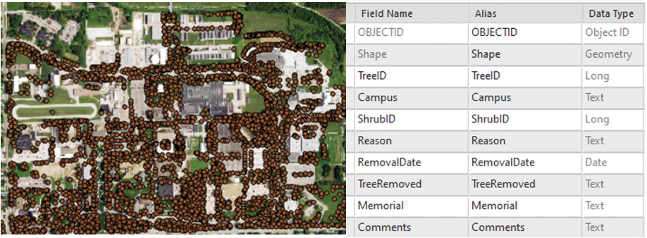
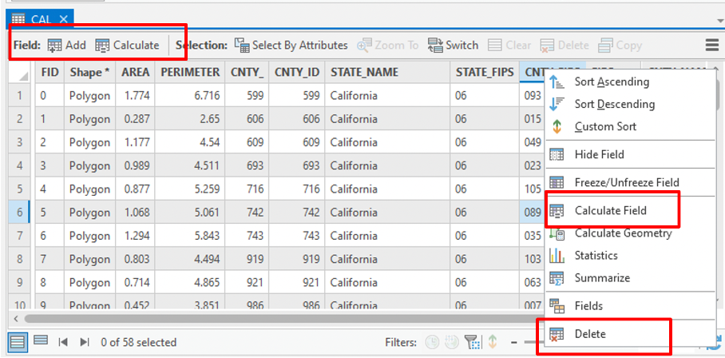
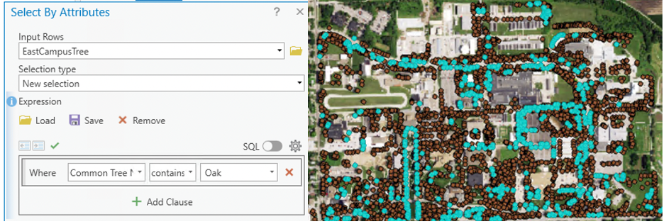
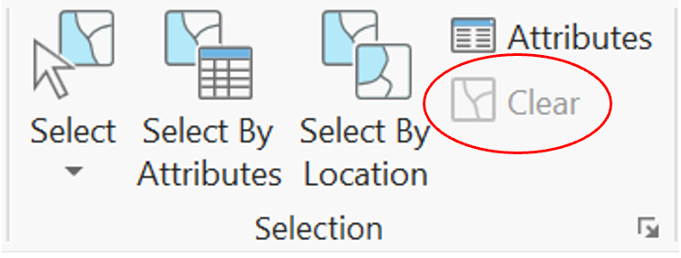
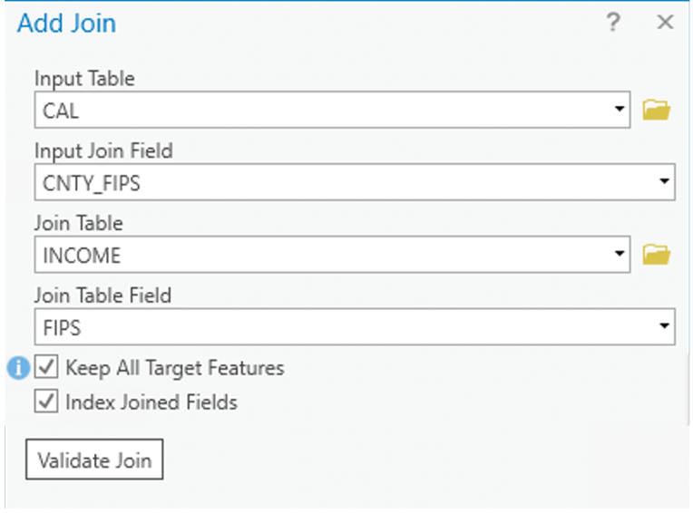
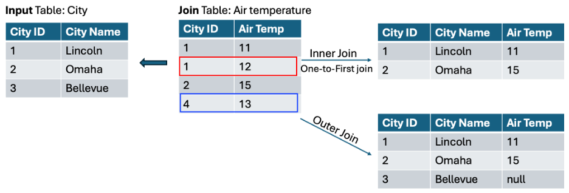

4 Table and attribute operations
Describe the structure of attribute tables
Manage attribute table
Construct and interpret attribute queries to select features
Perform table joins and relates
The two essential components of geospatial data include (1) coordinates to represent spatial information (location information), and (2) the non-spatial characteristics. While the spatial information is presented in coordinate pairs to define locations in two- or three-dimensional space, the format used to maintain the non-spatial information varies between the data models (vector or raster). In the case of raster data, pixel value per se represent the non-spatial information. But for vector data, the non-spatial information is typically arranged as a table, recording values for a list of characteristics about the features. In addition to attribute table, another type of table in GIS is Stand-alone table, which stores information that do not associate with any geographic features. In this chapter, we will talk about table and basic table operations, with a focus on attribute table.
4.1 Table
Vector data organize non-spatial information in tables similar to a relational database, where each row represents one feature (point or line or polygon) and each column represents an attribute. Similar to operations within a relational database, tables can be linked through common fields (keys), enabling the connection of multiple datasets (tables) and supporting efficient data storage and management. This linkage between spatial features and tabular records ensures that descriptive information can be systematically organized and queried using standard database operations such as selection, projection, and joins. What truly separates GIS and a conventional relational database is the incorporation of spatial data and spatial relationship, allowing analyses based on geographic location, including proximity, adjacency, containment, and intersection, which are not possible in traditional database systems.
Definitions
Records: rows in a table. Each row is associated with one feature.
Fields: columns in a table that stores values for a single attribute.
Key: a column (or a set of columns) used to identify records or define the relations between tables. Keys are used to connect tables and support operations such as joins.
Primary key: a unique identifier for each record (cannot be null), ensuring that each row can be uniquely identified.
Foreign key: a column or a set of columns in one table that references the primary key in another table. It establishes a link between tables.
Attribute table can take data in various types, including object identifier (object ID), geometry, numbers, date and time, and text Figure 4.1. When create a new field or define fields for a new table, you may choose to specify the length of the number (field precision: total number of digits; scale: number of digits to the right of the decimal point) or the length of the text (field length – maximum number of characters for the string) if you want to control rounding behavior, storage size and maintain consistency with other datasets.

Once imported into GIS platform (such as ArcGIS, (attributetable?)), you can apply basic table edits to the attribute table, including add or delete field, calculate values for a field, delete a row (which will delete the associated feature in vector data), and edit a cell value.

4.2 Selection
Selection function is the fundamental tool used to identify a subset of features from a dataset based on specific criteria. It does NOT create new data by default but simply highlights the selected records . You may select by attributes or by location (in chapter x). In GIS, selections are conceptually equivalent to queries in a relational database, which are composed using Structured Query Language (SQL) following SELECT x FROM y WHERE condition(s). However, in GIS, the Select By Attributes tool Figure 4.3 allows users to apply the same logic through a graphical interface, without requiring direct knowledge of SQL syntax.

Note that only the selected (highlighted) features will be used in the following analysis, meaning that operations will only be applied to the selected features. Sometimes this is what you want, but not always (often NOT). If you want to apply analysis to all the data but not the subset, make sure you clear the selection Figure 4.4.

4.3 Join
A join operation combines two tables by using a common key/field shared between them Figure 4.5. Records from the join table are matched to those in the input table and temporarily added to the corresponding records (the order matters). When use join, the name of the common field does not have to be the same in the two tables, but the data type must be the same.

To produce a valid join, each record in the input table should match one and only one record in the join table. When this condition is not met, ArcGIS enforces the join based on the structure of the input table.
In cases of many-to-one relationships, only the first matching record from the join table is retained for each input record (Figure 4.6, values in the red rectangle is not kept in the output table). This behavior is often referred to as a one-to-first join.
When no matching records are found, the join still proceeds, resulting in the following possible outcomes:
Scenario A: No matching records in the join table
Records in the join table that do not match any records in the input table are excluded from the result.Scenario B: No matching records in the input table
Inner join: Records in the input table without matches are removed from the output.
Outer join: Records in the input table are retained, and unmatched fields are assigned Null values (Figure 6, values in the blue rectangle are not kept in the output table).

Key points
Tables must share a common field (key) to perform a join.
A join creates a temporary relationship between two tables, meaning that the original data are NOT modified.
Joins can be removed at any time.
Joined table/results can be exported and saved as a new table if a permanent dataset is needed.
Cautions
Always examine both tables before and after joining to ensure the results are correct.
If the join field is not unique, you may get duplicate or unexpected records.
4.4 Relate
The Relate function operates similarly to a join in that it establishes a connection between tables based on a common field; however, the tables remain separate and no data are physically appended to the attribute table. Instead of merging data, a relate allows users to explore relationships dynamically: when records are selected in one table, the corresponding records in the related table are highlighted (only). This approach is particularly useful for examining associations between datasets without altering their structure. Unlike joins, which are typically limited to one-to-one or many-to-one relationships, the relate function supports a wider range of relationships, including one-to-one, one-to-many, many-to-one, and many-to-many.